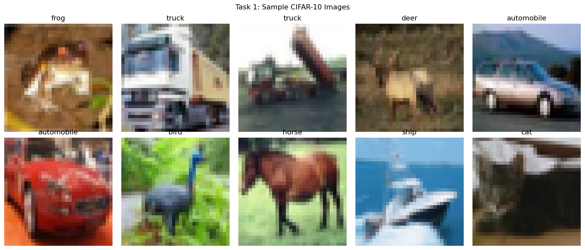
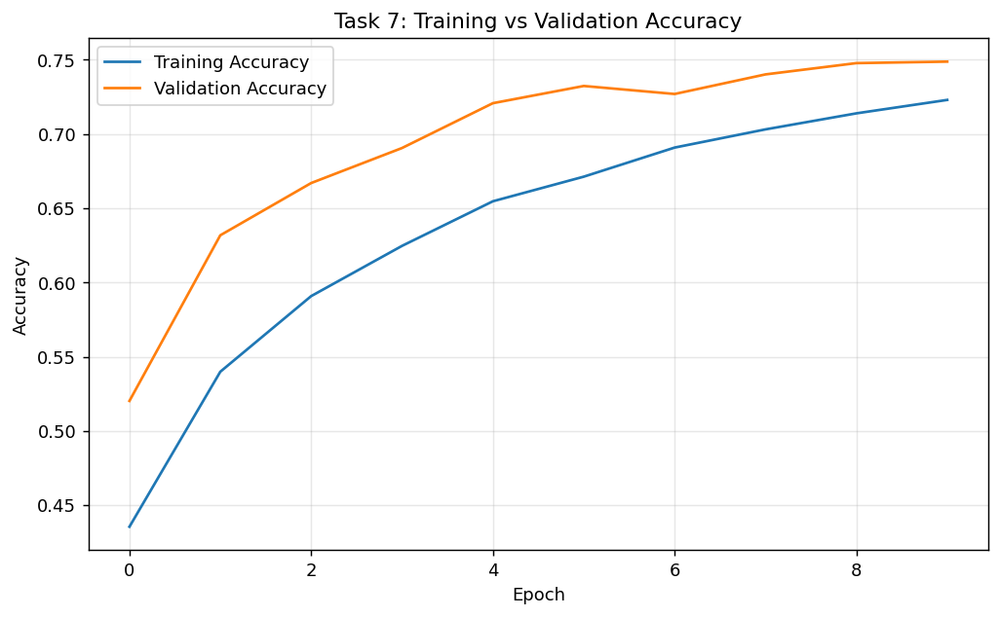
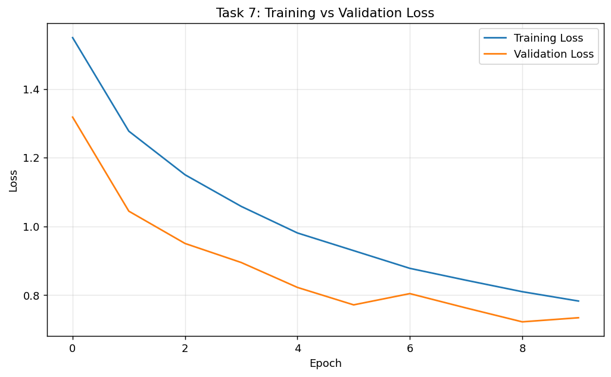
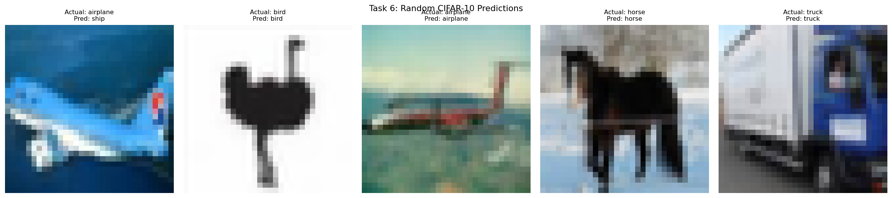
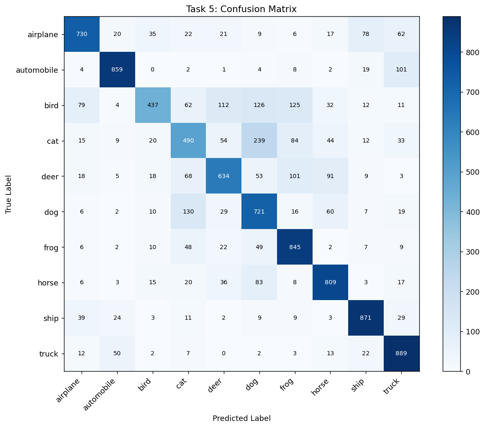

Lab Report 7: Transfer Learning for Crack Detection in UAV Inspection
Artificial Neural Networks Lab (COMP-341L)
Lab 07 Technical Report
1. Objective
The goal is to classify concrete structure images into Crack Present and No Crack under practical constraints: small dataset size (1,200 images), lighting changes, rotations, zoom variation, and blur. The report compares a baseline CNN and transfer learning pipelines to control overfitting.
2. Dataset and Setup
- Dataset mode: CIFAR-10 binary simulation for crack/no-crack.
- Total samples: 1,200 images (balanced classes).
- Input shape: 128 x 128 x 3.
- Split: 70% train, 15% validation, 15% test.

3. Part 1: Baseline CNN (Failure Demonstration)
Architecture used: Conv - ReLU - MaxPool x 2, followed by dense classifier. Training was performed for 15 epochs.
| Metric | Value |
|---|---|
| Training Accuracy | 0.972 |
| Validation Accuracy | 0.718 |
| Overfitting Gap (Train - Val) | 0.254 |
4. Part 2: Transfer Learning (Frozen Feature Extractor)
Pretrained backbone: MobileNetV2 with ImageNet weights and include_top=False. Base weights were frozen using base_model.trainable = False.
- Mathematically: for frozen parameters theta_base, update is zero, so theta_base(t+1) = theta_base(t).
- Gradients propagate through the graph, but optimizer updates only trainable head parameters.
| Model | Train Acc | Val Acc | Overfitting Gap |
|---|---|---|---|
| CNN Scratch | 0.972 | 0.718 | 0.254 |
| Transfer (Frozen) | 0.887 | 0.852 | 0.035 |
5. Part 3: Data Augmentation
Augmentations added: RandomRotation, RandomZoom, RandomFlip, RandomContrast. Validation improved from 0.852 to 0.874, showing better robustness against viewpoint and illumination variation.
6. Part 4: Fine-Tuning
- Unfreezed MobileNetV2 and kept only last 20 layers trainable.
- Learning rate reduced to
1e-5. - Additional 5 epochs trained after frozen stage.
Why low LR? Without reducing LR, pretrained features can be overwritten too aggressively, causing unstable validation and reduced generalization.
7. Required Visualizations



8. Part 5: Padding Analysis

Why border information matters: cracks can appear near image boundaries. Using padding='same' preserves edge context better, while padding='valid' shrinks maps and may drop boundary cues early.
9. Final Evaluation (Fine-Tuned Model)
| Metric | Value |
|---|---|
| Accuracy | 0.908 |
| Precision | 0.892 |
| Recall | 0.932 |
| F1-score | 0.911 |

10. Why Recall is Critical
In structural safety inspection, a false negative means a real crack is missed. This can lead to unsafe assets being marked healthy. Therefore recall is a key risk-control metric for deployment decisions.
11. Conclusion
Compared to training from scratch, transfer learning with freezing, augmentation, and controlled fine-tuning reduced overfitting and improved validation/test reliability under small-data constraints.